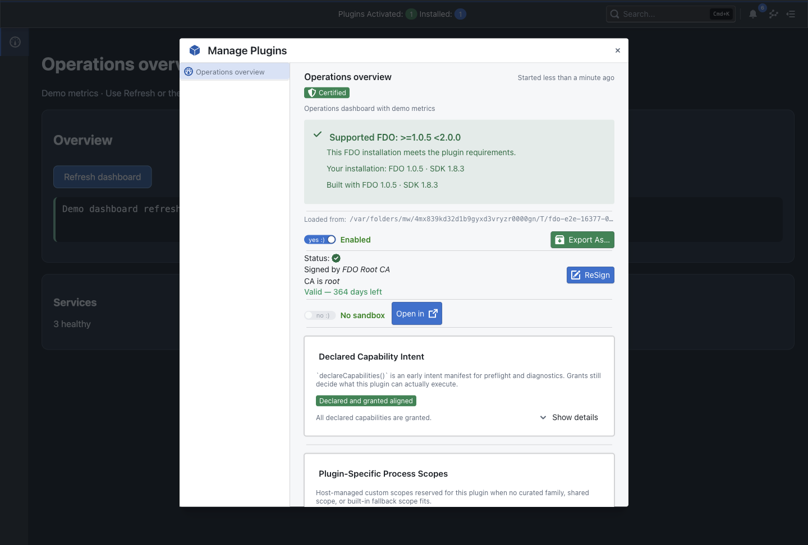
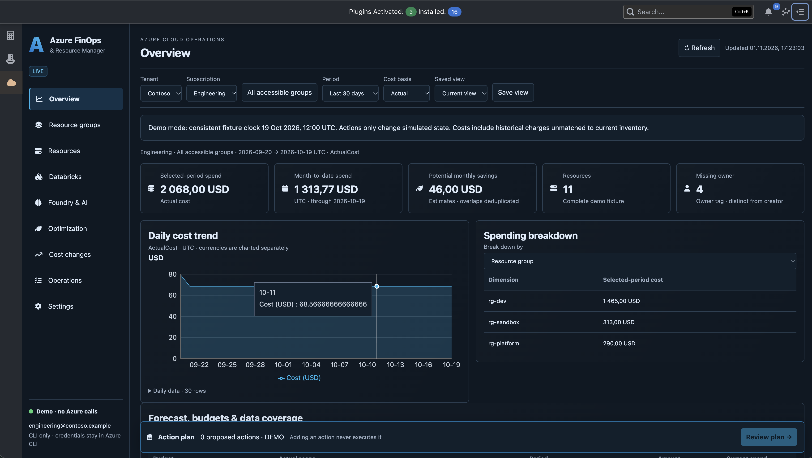
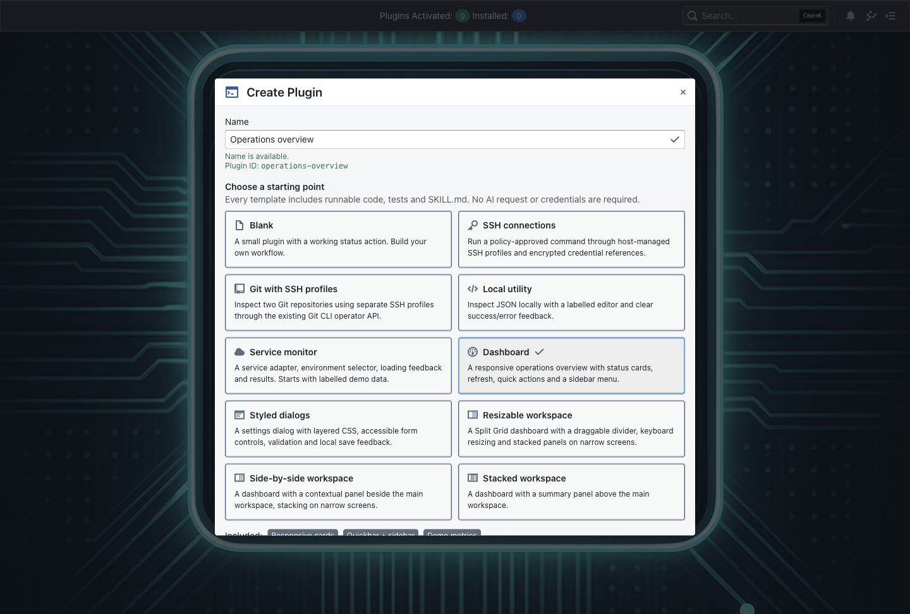
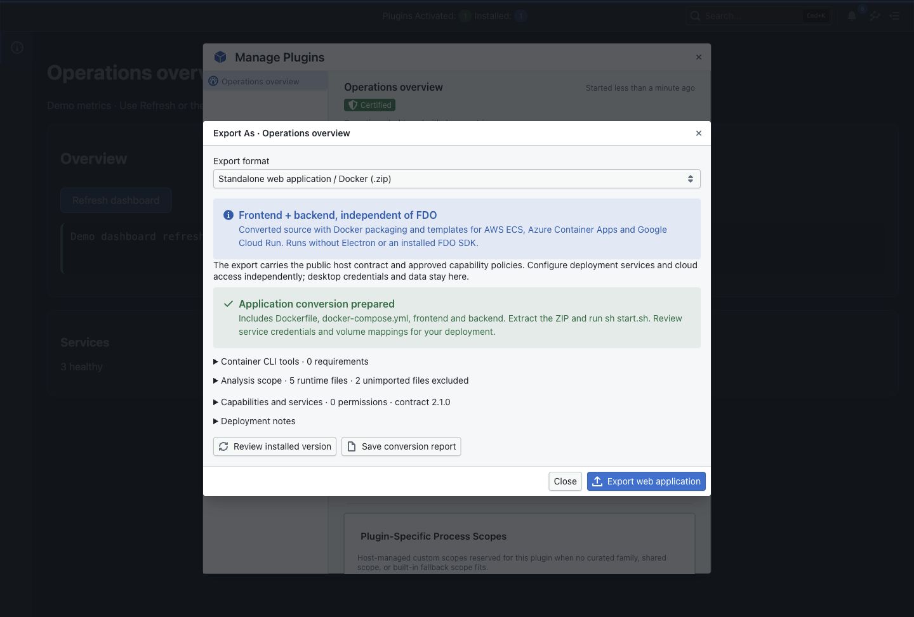
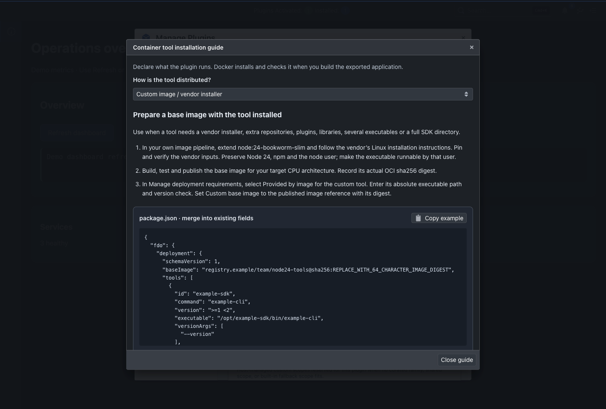
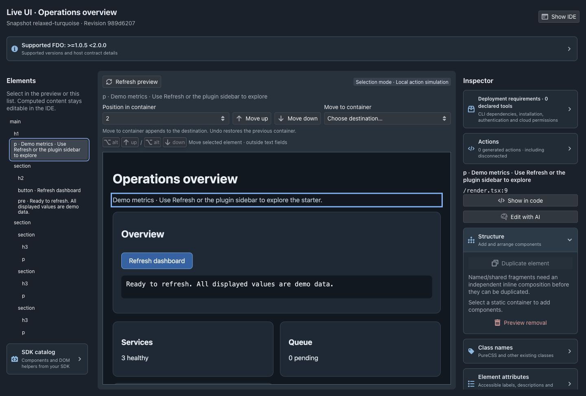
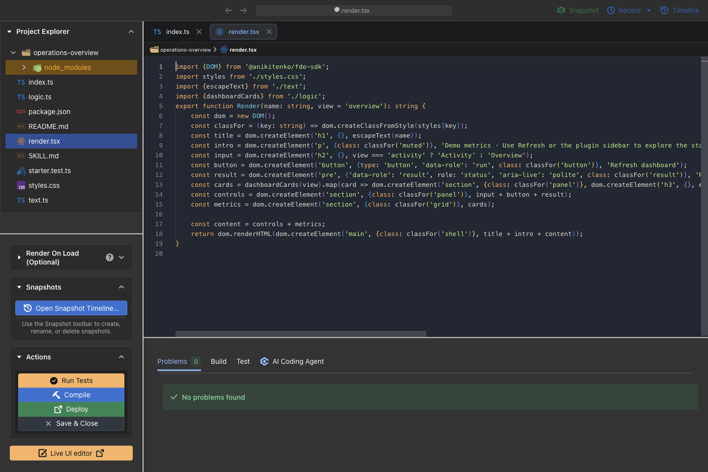

Your plugins, under control.
Inspect compatibility and signing status, review resource usage, and manage plugin lifecycle and capability grants from one place.
OPEN-SOURCE / DEVOPS WORKSPACE
AVAILABLE NOW FDO 1.0.5Keep service dashboards, remote commands and repeatable tasks in one desktop workspace. Run plugins, connect through built-in SSH, and share your toolset with GitOps. Customize a tool when you need to—or export it as a standalone Docker app.
macOS · Windows · Linux

Plugin driven
Open source
Desktop native
CLI ready
INSIDE FDO 1.0.5
Explore runnable plugins, management and standalone delivery. Optional development tools are there when you want to customize a plugin. These captures use FDO’s built-in demo content.

Inspect compatibility and signing status, review resource usage, and manage plugin lifecycle and capability grants from one place.

Choose a dashboard, local utility, service monitor, SSH connection tool or another starter. Templates include code, tests and a development guide.

Review conversion in Manage Plugins and export a frontend, backend, Dockerfile, Compose project and cloud templates. Configure deployment access separately; desktop credentials stay in FDO.

Declare the CLI tools your plugin runs. The installation guide covers catalog recipes, Debian packages, verified downloads and custom images for vendor installers or full SDKs.

Choose Live UI for supported interface edits instead of editing them directly in Monaco. Select elements, adjust text and CSS, and review the resulting source changes before applying them. Return to Monaco for code and backend logic.
01 / THE WORKSPACE
For developers and SREs who want a workspace that fits their job. FDO supplies the host, editor, and SDK. Plugins bring your workflows to life.
Build focused tools for the jobs you repeat. Keep their interfaces and workflows together in one desktop environment.
Explore plugin templatesCustomize plugins in the Monaco editor with SDK-aware AI assistance. For supported interface changes, Live UI offers a visual alternative to direct code editing.
Meet the coding assistantPlugin signing and explicit capability grants help you control access. Host-mediated actions use scoped policies for privileged operations.
Read the capability modelSync plugin collections with FDO’s bundled Git on macOS, Windows and Linux. Review updates and capability changes without installing Git for GitOps. Explore the author’s plugins in the fdo-plugins GitOps repository.
Browse the author’s GitOps plugins ↗SSH is built in on macOS, Windows and Linux—no separate SSH client needed. Use host-managed credentials, trusted host fingerprints, remote commands and terminals.
See connections & credentials ↗Take workspace snapshots, inspect history and restore earlier versions. Review visual and AI edits before making them part of your plugin.
Explore snapshots & history ↗OPTIONAL / PLUGIN DEVELOPMENT
When you want to build or customize a plugin, open the built-in Monaco editor. Work with TypeScript and CSS, use SDK-aware AI assistance, run tests and keep workspace snapshots. Prefer a visual alternative for interface changes? Choose Live UI; both editing paths work on your plugin’s source.
See the snapshot workflow ↗
AI CODING / YOUR WORKFLOWS & TOOLS
Build and refine plugins with SDK-aware AI assistance. The Codex CLI is built into FDO—no separate CLI installation needed. Skills, MCP tools and Hooks are currently supported for Codex coding assistants.
Import SKILL.md workflows and assign them to saved Codex assistants. Load the right conventions for the task at hand.
Explore Skills ↗Connect HTTP or local command servers. Choose the tools each Codex assistant can use and review real tool activity.
Explore MCP tools ↗Assign trusted commands to supported Codex events, from a prompt reminder to checks around tool use.
Explore Hooks ↗02 / MAKE IT YOURS
Bring the data, decisions and actions of a recurring task into one focused interface. A plugin can be a cloud cost explorer, a remote operations console or a tool built around your team’s process.
Explore the author’s plugin repositoryThe author’s plugins are published as a GitOps collection in anikitenko/fdo-plugins. Have a workflow of your own? Choose a working template and extend it with the SDK examples. Your service configuration and capability grants determine what the plugin can access.
Put cost trends, resource inventory and saved views together. The Azure FinOps plugin shown above demonstrates this workflow in demo mode.
Bring approved SSH commands and service actions into a dedicated interface, using host-managed connection profiles and explicit permissions.
Explore built-in SSH ↗Share versioned plugin collections through GitOps. Review updates and requested capabilities while keeping the source connected to your team’s repository.
Explore GitOps ↗03 / FOR THE TERMINAL PEOPLE
Scaffold a workspace, run tests, and watch your changes. Use JSON output for scripts and separate profiles for different environments.
First, enable fdo in
Settings → General inside the desktop app. Then
open a new terminal.
# Create your first plugin
fdo init ./my-tool --template blank
# Validate and run its tests
fdo validate ./my-tool
fdo test ./my-tool --json
# Watch changes and redeploy
fdo dev ./my-tool04 / MAKE YOURSELF AT HOME
Get FDO 1.0.5 for your platform on GitHub Releases. Release notes include version details, checksums, and signing status.
Apple Silicon & Intel
DMG / ZIPx64
Installer / Portablex64
AppImage / DEB / RPMFDO 1.0.5 is available. Read the 1.0.5 release notes for platform assets, checksums and signing details. You can also build from source. Prerelease builds may be unsigned; check their release notes.
BEFORE YOU START
Clear runtime requirements, from the desktop to a container.
No. FDO includes its own SSH client on macOS, Windows and Linux. Configure credentials, trusted host keys and plugin permissions in FDO. Commands sent to a server must exist on that remote server.
No. FDO ships a built-in Git runtime for its GitOps synchronization. Git or other CLI commands invoked by a plugin are different: those tools must be installed on the computer running FDO and allowed by the plugin’s process policy.
Declare the tools the exported app needs. The generated image can install catalog tools, Debian packages or verified executable downloads. Use a custom base image for vendor installers or full SDKs. The desktop’s installed tools are not copied. Read the Docker tool guide ↗
Conversion is reviewed before export. Supported source and services become a standalone frontend and backend; unsupported dependencies require migration work. Configure cloud access, credentials and persistent storage for the deployment. See export requirements ↗
FDO is an open-source project distributed under the MIT license. Optional AI providers, cloud infrastructure and third-party services may have their own costs. You can use the built-in templates without making an AI request.
Follow the beginner video workshops to build your first plugin and connect a real API. Install FDO 1.0.5, create a plugin from one of the ten built-in templates, and run its tests. Use the editor and Live UI to customize it, then sign and deploy it. The FDO CLI guide covers terminal workflows.
KEEP EXPLORING
Watch a workshop, read the docs, or build something of your own.